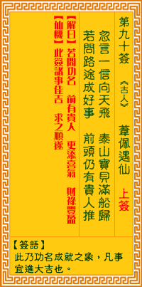

观音灵签第九十签 【苇佩遇仙】 |
 | |||
忽朝一信下天墀 宝贝船装满载归 若问前程成底事 始终应得贵人提 |
||||
| 【吉凶】 | 上上签 | 【宫位】 | 酉宫 | |
| 【签语】 | 此卦功名成就之象，凡事宜进大吉也。 | |||
| 【解曰】 | 若问功名 前有贵人 理添喜气 财禄丰盈 | |||
| 【仙机】 | 此签家宅诸事吉，求之顺遂。 | |||
| 【详解】 | 意想不到的好消息从天而降，犹如船上装载着满满的珍宝荣归;若要问前程事物最后的发展，早晚还是会得到贵人的帮助啊。 欲问功名，贵人遇得，更增福庆，财禄进益。此签功名成就之象，凡事进身大吉。 本签者。功名成就之象。凡事进身大吉也。君尔之今运也。忽朝一信天下墀之时。宝贝船装满载归之时。若问前程于神仙。君之今也。始终应得贵人提之刻。凡百 事得真人。顺利推进之运。上上者。易言之。君汝之今。欲问功名贵人遇得更增福庆财禄进益者耶。 此签有”深入人心”之意。提醒当事人，凡事以诚相待。在人与人合作的社会，凡事无法光靠个人的单打独斗，也必须仰赖他人的长才。当我们对某人的才华非常 激赏、求贤若渴时，会想要用尽一切办法来获得。但有时越是才华洋溢、充满智慧的人，越难以被世俗的虚荣所打动。此时与其用尽千方百计，还不如以”诚意” 做起。”诚”出自于自身的内心，没办法用任何外物修饰。它的影响力缓慢但却可以深植人心。凡事以诚待人，相信对方一定也会被感动。荣华富贵虽然可以诱惑 一个人对物质的需求欲望，但”诚意”却可以融化外在的一切，牢牢地抓住每个人的心。 | |||
| 【典故】 | 韦丹，唐朝时人，年进四十还没考中科举。一天，乘驴至洛阳中桥，见渔人出售一双大鳖，置于桥上，呼呻喘气，快将死去。因见其可怜 ，自己身上又无钱，只好以驴子交换，然后将他放于水中，徒行而去。后遇一算命先生，得其引见一老翁，须眉皓然，身长七尺，见了韦丹就礼拜，称他为救命恩人。老翁殷勤对 待韦丹，并从怀中取出一卷文书，说是从天府衙门中抄来的，证明韦丹一生做何官职，开始与何时，至于何时等资料，都是命中注定，上天安排。几天后告别，又借予韦丹五十千 文钱，后来一切皆应验，韦丹春风得意，加官进禄，总共十七任。据说，老人就是天上神龙的化身。河东记 | |||